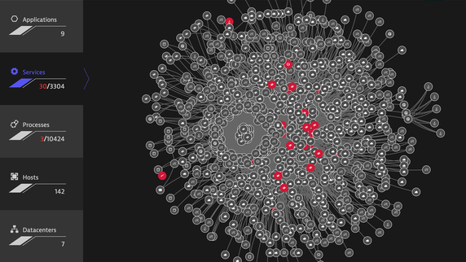
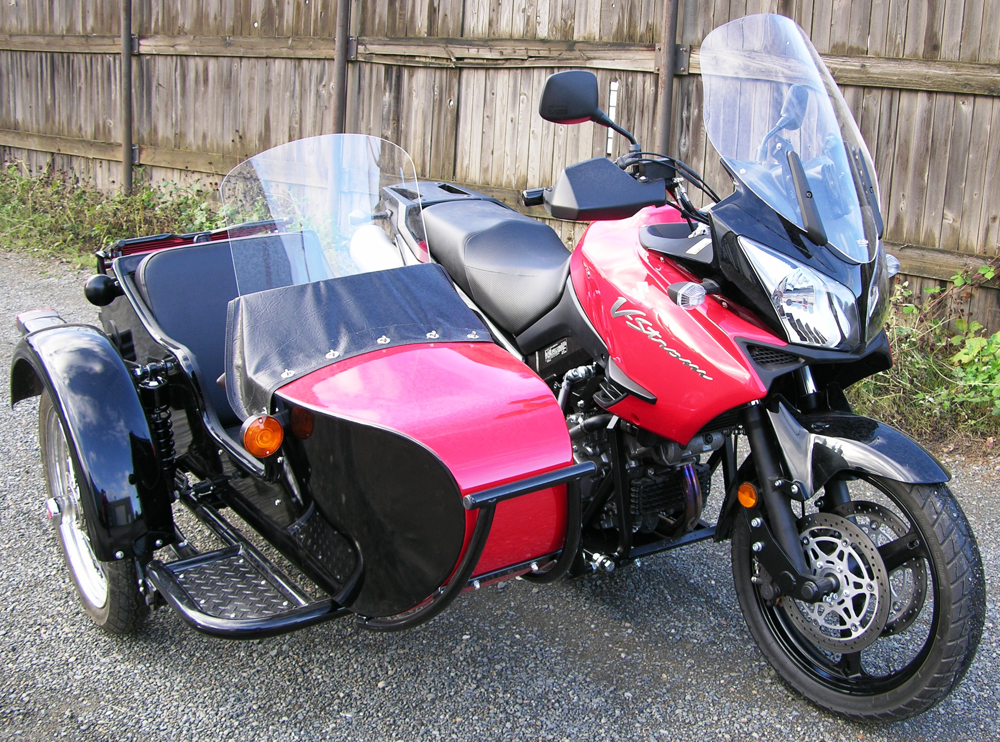
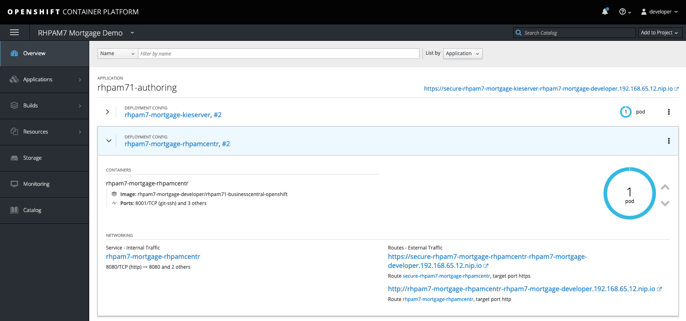
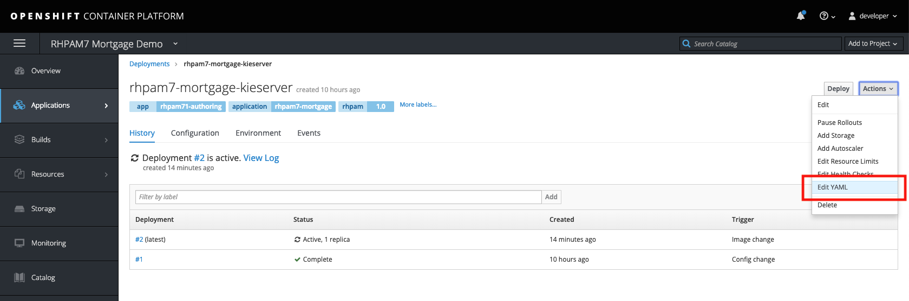
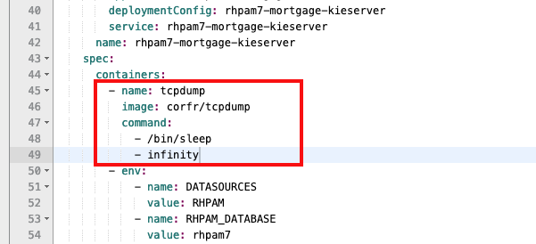
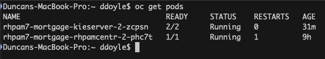
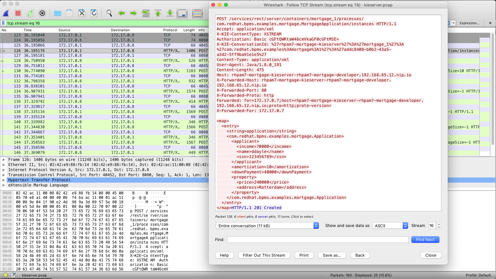
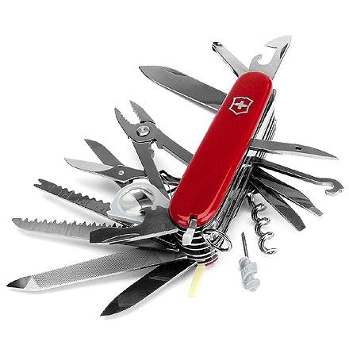
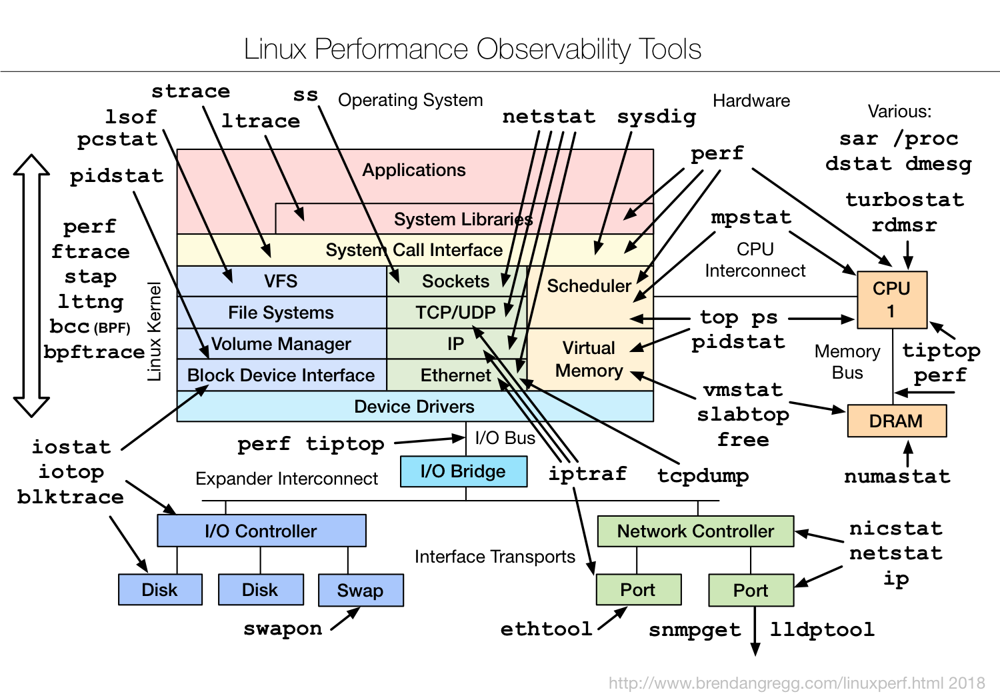

Kubernetes 中分析调试网络流量的4种方式
在 2019-10-04 Friday 发布于 DevOps 分类 • 3 min read
前言¶
在当今世界, 分布式系统, 微服务/SOA架构遍地, 服务之间的许多交互和通信都不再是同一主机的不同线程或进程, 而是跨主机, 甚至跨网络区域. 那么一旦相关服务出现问题, 我们就会需要调试服务间的通讯, 主机间的网络...

Kubernetes 中的应用出了问题, 往往需要进行网络抓包分析. 本文介绍了在 Kubernetes 中网络调试分析的4种方法.
- 使用 sidecar
- 使用 netshoot - 一个 Docker + Kubernetes网络故障排除的瑞士军刀容器
- 利用Network Namespace
- 使用 kubectl 插件 -
ksniff
方法一 - 使用 Sidecar¶
备注:
本章节为译文, 原文链接: 红帽开发者博客 - Using sidecars to analyze and debug network traffic in OpenShift and Kubernetes pods
By Duncan Doyle
February 27, 2019
sidecar应用范围不仅仅止于此, 比如: APM监控的agent就可以通过这种方式来挂载. 详见我的另一篇博文: 使用 Dynatrace AppMon 监控 Docker 应用
在分布式计算、容器和微服务的世界中，服务之间的许多交互和通信都是通过RESTful api完成的。在开发这些api和服务之间的交互时，我经常需要调试服务之间的通信，特别是当事情看起来不像预期的那样工作时。
在容器出现之前，我只需将服务部署到本地机器上，启动Wireshark，执行测试，并分析服务之间的HTTP通信。对我来说，这是一种快速分析软件中通信问题的简单而有效的方法。然而，这种调试方法在一个容器化的世界中并不适用。
首先，容器很可能在您的机器无法直接访问的内部容器平台网络上运行。第二个问题是，按照容器设计最佳实践，容器只包含执行其任务所需的最小应用程序和库集。这意味着像tcpdump这样的工具通常在容器中不可用。这使得调试和分析容器之间的网络通信变得更加困难，从而使得调试微服务间的通信比在非容器环境中更加困难。本文展示了一种解决方案。
Sidecar 前来救援!¶

在过去的几个月里，我尝试了各种方法来克服这个问题，最终形成了我将在本文中概述的方法。它是捕获Kubernetes/OpenShift pods之间的网络流量数据的简单方法，允许开发人员更好地分析和调试容器化应用程序中的通信问题，并更快、更有效地解决问题。
我们将使用tcpdump捕获一个所谓的PCAP(packet capture)文件，该文件将包含pod的网络流量。然后可以将这个PCAP文件加载到Wireshark之类的工具中来分析流量，在本例中，分析在pod中运行的服务的RESTful通信。在本文中，我将使用Red Hat Process Automation Manager产品的KIE服务器(执行服务器)作为示例，但是这种方法应该适用于任何类型的容器化应用程序。
要克服的第一个问题是Kubernetes pod中tcpdump命令的可用性。KIE服务器容器映像没有安装tcpdump。其次，容器不提供从Red Hat存储库安装tcpdump的实用程序。为了克服这个问题，我们使用了“sidecar容器”的概念。
Sidecar 概念
sidecar容器是与实际服务/应用程序运行在相同pod中的容器，能够为服务/应用程序提供附加功能。sidecar容器的一个例子是Istio的Envoy sidecar，它使pod成为服务网格的一部分。在本例中，我们将部署一个sidecar容器，该容器提供tcpdump实用程序。由于pod中的多个容器共享相同的网络层，所以我们可以使用sidecar来捕获进出KIE服务器的网络流量。
部署 Sidecar¶
在这个例子中，我部署了Red Hat Process Automation Manager 7 Mortgage Demo，它将在我的OpenShift namespace中创建两个pod。一个pod运行Business Central workbench，另一个pod是执行服务器的pod。这两个组件之间的通信是通过REST完成的，这是我们将要捕获的流量。

我们的目标是捕获KIE服务器pod上的网络流量，以便分析Business Central workbench 发送给KIE服务器的RESTful命令。要做到这一点，我们首先需要附加(attach)一个 sidecar 到KIE服务器的pod.
-
在Overview页面中，单击要分析的pod的名称。这将打开部署配置(Deployment Config, 简称DC)页面。
-
在部署配置屏幕的右上角，单击Actions -> Edit YAML。这将打开DC 的YAML配置。

-
向下滚动，直到看到单词
containers。我们将添加一个额外的容器，安装了tcpdump的sidecar到pod中。直接在containers定义下添加以下YAML片段:
- name: tcpdump
image: corfr/tcpdump
command:
- /bin/sleep
- infinity

- 保存配置。这将部署一个新的pod，它现在由两个容器组成:一个容器包含KIE服务器，另一个容器包含我们的tcpdump工具，它将无限期地持续运行。
捕获和分析流量¶
随着sidecar的部署和运行，我们现在可以开始捕获数据了。我尝试的方法之一是使用oc rsh命令远程执行sidecar中的tcpdump命令，将网络数据流输出到FIFO文件，并将数据直接导入Wireshark。由于各种原因，这种方法失败了。其中一个问题是，tcpdump向stderr发送信息消息，但是这些消息与stdout在相同的流中, 并且是通过SSH接收，从而破坏了进入Wireshark的数据。
我最后使用的方法是登录到sidecar容器，并在sidecar中运行tcpdump命令来创建PCAP文件。当您捕获了足够的数据后，就可以停止捕获过程并将PCAP文件复制到您希望使用Wireshark进行网络流量分析的机器上。具体步骤如下:
-
在您的开发机器上，用
oc客户端连接到OpenShift实例，并激活正确的项目(project, 即namespace)，运行oc get pods命令来列出您的pods:
-
使用以下命令登录到我们的KIE服务器pod的tcpdump容器中:
oc rsh -c tcpdump rhpam7-mortgage-kieserver-2-zcpsn -
在
tcpdump容器中，运行此命令以启动网络流量捕获过程:tcpdump -s 0 -n -w /tmp/kieserver.pcap -
运行要分析的网络流量的测试。在本例中，我将从Business Central workbench中启动一个业务流程，它将向KIE服务器发送一个RESTful请求。
-
捕获足够的数据后，在
tcpdump容器中使用Ctrl+C完成捕获过程。 -
回到本地机器。将PCAP文件从pod复制到本地机器:
oc cp -c tcpdump rhpam7-mortgage-kieserver-2-zcpsn:tmp/kieserver.pcap kieserver.pcap -
用Wireshark打开PCAP文件并分析网络流量。在这个例子中，我正在分析我的HTTP POST方法，它创建了Mortgage 进程的一个新实例:

总结¶
在容器环境(如Kubernetes和/或OpenShift)中分析pod之间的网络通信可能比在非容器环境中更困难一些。然而，sidecar容器的概念为开发人员提供了一种简单的工具，可以将容器连同所需的开发工具和实用程序附加到微服务pod上。这避免了开发人员必须在应用程序容器映像本身中安装这些调试工具，从而保持容器的轻便和干净。使用像oc rsh和oc cp这样的OpenShift工具，我展示了如何轻松地从pod捕获网络流量数据并将数据带到开发机器进行分析。
方法二 - 使用 netshoot¶
Netshoot - Docker + Kubernetes网络故障排除的瑞士军刀容器

用途¶
Docker和Kubernetes网络故障排除变得复杂。通过正确理解Docker和Kubernetes网络的工作方式和正确的工具集，您可以排除故障并解决这些网络问题。netshoot容器有一组强大的网络troubleshoot工具，可以用来排除Docker网络问题。与这些工具一起出现的还有一组用例，展示了如何在真实场景中使用这个容器。
Network Namespaces - 网络名称空间¶
在开始使用这个工具之前，有一点很重要:网络名称空间。网络名称空间提供与网络相关的系统资源的隔离。Docker使用网络和其他类型的名称空间(pid、mount、user...)为每个容器创建一个隔离的环境。从接口、路由到ip的所有内容都完全隔离在容器的网络名称空间中。
Kubernetes也使用网络名称空间。Kubelets为每个pod创建一个网络名称空间，其中该pod中的所有容器共享相同的网络名称空间(eths、IP、tcp套接字……)。这是Docker容器和Kubernetes pod之间的关键区别。
名称空间很酷的一点是您可以在它们之间进行切换。您可以输入不同容器的网络名称空间，使用甚至没有安装在该容器上的工具在其网络堆栈上执行一些故障排除。此外，netshoot可以通过使用主机的网络名称空间来对主机本身进行故障排除。这允许您在不直接在主机或应用程序包上安装任何新包的情况下执行任何故障排除。
针对容器的用法¶
- 容器的网络名称空间:如果您的应用程序的容器存在网络问题，您可以像这样使用容器的网络名称空间启动netshoot:
$ docker run -it --net container:<container_name> nicolaka/netshoot - 主机的网络名称空间:如果您认为网络问题在于主机本身，那么可以使用该主机的网络名称空间启动netshoot。命令:
$ docker run -it --net host nicolaka/netshoot - 网络的网络名称空间:如果要对Docker网络进行故障排除，可以使用
nsenter输入网络的名称空间。这将在下面的nsenter部分进行解释。
针对 Kubernetes 的用法¶
Kubernetes:如果你想打开一个临时的容器来调试。
$ kubectl run --generator=run-pod/v1 tmp-shell --rm -i --tty --image nicolaka/netshoot -- /bin/bash
如果您想在主机的网络名称空间上spin up一个容器。
$ kubectl run tmp-shell --generator=run-pod/v1 --rm -i --tty --overrides='{"spec": {"hostNetwork": true}}' --image nicolaka/netshoot -- /bin/bash
同样的原理,
netshoot也可以通过sidecar的方式进行使用.
网络问题¶
许多网络问题可能导致应用程序性能下降。其中一些问题可能与底层网络基础设施有关。其他问题可能与主机或Docker级别的配置错误有关。让我们来看看常见的网络问题
- 延迟(latency)
- 路由(routing)
- DNS解析(DNS resolution)
- 防火墙(firewall)
- 不完整的ARP(incomplete ARPs)
为了解决这些问题，netshoot包含了一组强大的工具，如图所示。

被包含的包¶
以下包被包含在netshoot中。
apache2-utils
bash
bind-tools
bird
bridge-utils
busybox-extras
calicoctl
conntrack-tools
ctop
curl
dhcping
drill
ethtool
file
fping
iftop
iperf
iproute2
ipset
iptables
iptraf-ng
iputils
ipvsadm
libc6-compat
liboping
mtr
net-snmp-tools
netcat-openbsd
netgen
nftables
ngrep
nmap
nmap-nping
openssl
py-crypto
py2-virtualenv
python2
scapy
socat
strace
tcpdump
tcptraceroute
util-linux
vim
方法三 - 利用Network Namespace¶
正如方法二中提到的Network Namespace概念, 实际上, 不同的容器, 只是在宿主机上不同 namespace 运行的进程而已. 因此要在不同的容器抓包可以简单地使用命令切换 network namespace 即可，可以使用在宿主机上的 tcpdump 等应用进行抓包。
前提条件: 宿主机上已安装
tcpdump参考链接: 在 k8s 中对指定 Pod 进行抓包
具体操作步骤如下:
- 查看指定 pod 运行在哪个宿主机上:
kubctl describe pod <pod> -n mservice - 获得容器的 pid:
docker inspect -f {{.State.Pid}} <container> - 进入该容器的 network namespace:
nsenter --target <PID> -n - 使用宿主机的
tcpdump抓包, 指定 eth0 网卡:tcpdump -i eth0 tcp and port 80 -vvv - 或者直接抓包并导出到文件:
tcpdump -i eth0 -w /tmp/out.cap - 从远程
scp到本地:scp ipaddr:/tmp/out.cap ./ - 之后在 Wireshark 中可以打开文件非常直观得查看过滤抓到的数据。
方法四 - 使用 kubectl 插件ksniff¶
注意:
Ksniff还没有为生产做好准备，目前不建议为生产工作负载运行Ksniff。
题外话: krew - kubectl 插件包管理器 ¶
¶
前提条件: kubectl v1.12或更高.
Krew是kubectl插件的包管理器。(后续会使用krew来安装ksniff, 方便很多)
什么是 krew
krew是一个使kubectl插件易于使用的工具。krew帮助您发现插件，并在您的机器上安装和管理它们。它类似于apt、dnf或brew等工具。
- 对于 kubectl 用户: krew帮助您以一致的方式查找、安装和管理kubectl插件。
krew 易于使用:
kubectl krew search # show all plugins
kubectl krew install view-secret # install a plugin named "view-secret"
kubectl view-secret # use the plugin
kubectl krew upgrade # upgrade installed plugins
kubectl krew uninstall view-secret # uninstall a plugin
详细文档请参阅用户指南。
查看在krew上可用的kubectl插件列表，或者运行kubectl krew search来发现可用的插件。
安装 krew
Bash 和 ZSH:
- 确保
git已安装; - 运行如下命令, 下载并安装
krew
(
set -x; cd "$(mktemp -d)" &&
curl -fsSLO "https://github.com/kubernetes-sigs/krew/releases/download/v0.3.1/krew.{tar.gz,yaml}" &&
tar zxvf krew.tar.gz &&
./krew-"$(uname | tr '[:upper:]' '[:lower:]')_amd64" install \
--manifest=krew.yaml --archive=krew.tar.gz
)
- 添加
$HOME/.krew/bin目录到PATH环境变量. 如下:export PATH="${KREW_ROOT:-$HOME/.krew}/bin:$PATH"并重启下shell生效.
安装ksniff¶
通过krew: kubectl krew install sniff
使用方法¶
kubectl < 1.12:
kubectl plugin sniff <POD_NAME> [-n <NAMESPACE_NAME>] [-c <CONTAINER_NAME>] [-i <INTERFACE_NAME>] [-f <CAPTURE_FILTER>] [-o OUTPUT_FILE] [-l LOCAL_TCPDUMP_FILE] [-r REMOTE_TCPDUMP_FILE]
kubectl >= 1.12:
kubectl sniff <POD_NAME> [-n <NAMESPACE_NAME>] [-c <CONTAINER_NAME>] [-i <INTERFACE_NAME>] [-f <CAPTURE_FILTER>] [-o OUTPUT_FILE] [-l LOCAL_TCPDUMP_FILE] [-r REMOTE_TCPDUMP_FILE]
POD_NAME: Required. the name of the kubernetes pod to start capture it's traffic.
NAMESPACE_NAME: Optional. Namespace name. used to specify the target namespace to operate on.
CONTAINER_NAME: Optional. If omitted, the first container in the pod will be chosen.
INTERFACE_NAME: Optional. Pod Interface to capture from. If omited, all Pod interfaces will be captured.
CAPTURE_FILTER: Optional. specify a specific tcpdump capture filter. If omitted no filter will be used.
OUTPUT_FILE: Optional. if specified, ksniff will redirect tcpdump output to local file instead of wireshark.
LOCAL_TCPDUMP_FILE: Optional. if specified, ksniff will use this path as the local path of the static tcpdump binary.
REMOTE_TCPDUMP_FILE: Optional. if specified, ksniff will use the specified path as the remote path to upload static tcpdump to.
举例:
kubectl sniff mypod -n myproject -o /tmp/mypod.pcap
总结¶
为了在容器或K8S中进行网络调试和分析, 本文列举了4种方法, 现在进行总结归纳:
- 使用 sidecar - sidecar 容器所在的pod中的多个容器共享相同的网络层, 且sidecar容器可以包含
tcpdump等工具; - 利用Network Namespace - 不同的容器, 只是在宿主机上不同 namespace 运行的进程而已. 容器的网络也是如此.
- 使用
netshoot-netshoot其实是包含一系列的常用网络分析调试工具集的容器, 真正的使用方法其实还是以上2种:- 通过 sidecar挂载
- 利用Network Namespace分析调试
- 使用 kubectl 插件 -
ksniff. 个人猜想, 这个只是一个通过 kubectl 插件的封装, 底层原理应该还是 Network Namespace.
以上这些方法, 有不同的前提条件和使用场景, 希望本文读完会让你的K8S调试技能有所提升.